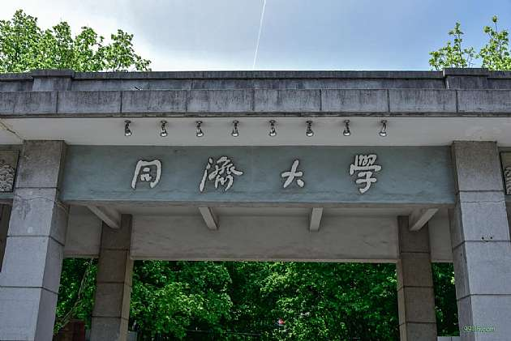

同济大学简介
同济大学概览
wikipedia同济大学（英语：Tongji University，德语：Tongji-Universität），简称“同济”，是历史悠久、享有盛誉的中国著名高等学府。同济大学是位于中国上海市的综合性大学，是中华人民共和国教育部直属的全国重点大学，行政级别为副部级，是“双一流”(A类)、“211工程”、“985工程”重点建设高校， 是全球环境与可持续发展合作联盟、国际设计艺术院校联盟、21世纪学术联盟、卓越大学联盟、国际绿色校园联盟、同济-伯克利工程联盟、中俄工科大学联盟成员。
同济大学目前共设有38个学院（系）和二级办学机构，7家附属医院，5所附属中学；有全日制本科生1.7万余人，硕士研究生1.3万余人，博士研究生近5000人。有外国留学生数千人；学校占地面积约3850亩；纸本图书400余万册。
根据2018年QS世界大学排名和2018年泰晤士高等教育世界大学排名，同济大学均位列全国(中国大陆)第十。